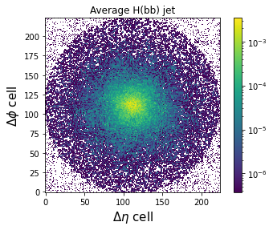
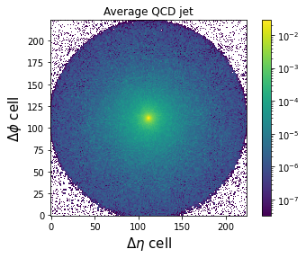
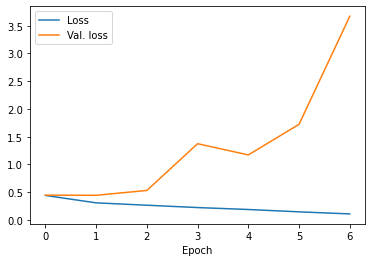

Week 5 Notebook: Deep Learning from Jet Images¶
Now, we’ll look at a deep learning model based on jet images
import tensorflow.keras as keras
import numpy as np
from sklearn.metrics import roc_curve, auc
import matplotlib.pyplot as plt
import uproot
import utils
import yaml
with open('definitions_image.yml') as file:
# The FullLoader parameter handles the conversion from YAML
# scalar values to Python the dictionary format
definitions = yaml.load(file, Loader=yaml.FullLoader)
features = definitions['features']
spectators = definitions['spectators']
labels = definitions['labels']
nfeatures = definitions['nfeatures']
nspectators = definitions['nspectators']
nlabels = definitions['nlabels']
Jet Images¶
Let’s construct jet images [9], which are 2D image-based representations of the spatial energy spread of jets. Each pixel’s intensity is given by the sum of the transverse momentum of the particles located in that pixel.
feature_array, y, spec_array = utils.get_features_labels('root://eospublic.cern.ch//eos/opendata/cms/datascience/HiggsToBBNtupleProducerTool/HiggsToBBNTuple_HiggsToBB_QCD_RunII_13TeV_MC/train/ntuple_merged_10.root',
features, spectators, labels,
remove_mass_pt_window=False,
entry_stop=10000)
# make image
X = utils.make_image(feature_array)
print(X.shape) # image is a 4D tensor (n_samples, n_pixels_x, n_pixels_y, n_channels)
(9375, 224, 224, 1)
from matplotlib.colors import LogNorm
plt.figure()
plt.title('Average H(bb) jet')
plt.imshow(np.mean(X[y[:,1]==1],axis=0), origin='lower', norm=LogNorm())
plt.colorbar()
plt.xlabel(r"$\Delta\eta$ cell", fontsize=15)
plt.ylabel(r"$\Delta\phi$ cell", fontsize=15)
plt.show()
plt.figure()
plt.title('Average QCD jet')
plt.imshow(np.mean(X[y[:,0]==1],axis=0), origin='lower', norm=LogNorm())
plt.colorbar()
plt.xlabel(r"$\Delta\eta$ cell", fontsize=15)
plt.ylabel(r"$\Delta\phi$ cell", fontsize=15)
plt.show()


2D Convolutional Neural Network Classifier¶
from tensorflow.keras.models import Model
from tensorflow.keras.layers import Input, Dense, BatchNormalization, Conv2D, Flatten, MaxPooling2D, Activation
import tensorflow.keras.backend as K
# define dense keras model
inputs = Input(shape=(224,224,1), name = 'input')
x = BatchNormalization(name='bn_1')(inputs)
x = Conv2D(64, (3,3), padding='same', name = 'conv2d_1')(x)
x = MaxPooling2D(2,2)(x)
x = BatchNormalization(name='bn_2')(x)
x = Activation('relu')(x)
x = Conv2D(32, (3,3), padding='same', name = 'conv2d_2')(x)
x = MaxPooling2D(2,2)(x)
x = BatchNormalization(name='bn_3')(x)
x = Activation('relu')(x)
x = Conv2D(32, (3,3), padding='same', name = 'conv2d_3')(x)
x = MaxPooling2D(2,2)(x)
x = BatchNormalization(name='bn_4')(x)
x = Activation('relu')(x)
x = Flatten(name='flatten_1')(x)
x = Dense(256, name='dense_1', activation='relu')(x)
outputs = Dense(nlabels, name = 'output', activation='softmax')(x)
keras_model_conv2d = Model(inputs=inputs, outputs=outputs)
keras_model_conv2d.compile(optimizer='adam', loss='categorical_crossentropy', metrics=['accuracy'])
print(keras_model_conv2d.summary())
2021-09-13 00:28:49.192788: I tensorflow/core/platform/cpu_feature_guard.cc:142] This TensorFlow binary is optimized with oneAPI Deep Neural Network Library (oneDNN) to use the following CPU instructions in performance-critical operations: SSE4.1 SSE4.2 AVX AVX2 FMA
To enable them in other operations, rebuild TensorFlow with the appropriate compiler flags.
Model: "model"
_________________________________________________________________
Layer (type) Output Shape Param #
=================================================================
input (InputLayer) [(None, 224, 224, 1)] 0
_________________________________________________________________
bn_1 (BatchNormalization) (None, 224, 224, 1) 4
_________________________________________________________________
conv2d_1 (Conv2D) (None, 224, 224, 64) 640
_________________________________________________________________
max_pooling2d (MaxPooling2D) (None, 112, 112, 64) 0
_________________________________________________________________
bn_2 (BatchNormalization) (None, 112, 112, 64) 256
_________________________________________________________________
activation (Activation) (None, 112, 112, 64) 0
_________________________________________________________________
conv2d_2 (Conv2D) (None, 112, 112, 32) 18464
_________________________________________________________________
max_pooling2d_1 (MaxPooling2 (None, 56, 56, 32) 0
_________________________________________________________________
bn_3 (BatchNormalization) (None, 56, 56, 32) 128
_________________________________________________________________
activation_1 (Activation) (None, 56, 56, 32) 0
_________________________________________________________________
conv2d_3 (Conv2D) (None, 56, 56, 32) 9248
_________________________________________________________________
max_pooling2d_2 (MaxPooling2 (None, 28, 28, 32) 0
_________________________________________________________________
bn_4 (BatchNormalization) (None, 28, 28, 32) 128
_________________________________________________________________
activation_2 (Activation) (None, 28, 28, 32) 0
_________________________________________________________________
flatten_1 (Flatten) (None, 25088) 0
_________________________________________________________________
dense_1 (Dense) (None, 256) 6422784
_________________________________________________________________
output (Dense) (None, 2) 514
=================================================================
Total params: 6,452,166
Trainable params: 6,451,908
Non-trainable params: 258
_________________________________________________________________
None
# define callbacks
from tensorflow.keras.callbacks import ModelCheckpoint, EarlyStopping, ReduceLROnPlateau
early_stopping = EarlyStopping(monitor='val_loss', patience=5)
reduce_lr = ReduceLROnPlateau(patience=5,factor=0.5)
model_checkpoint = ModelCheckpoint('keras_model_conv2d_best.h5', monitor='val_loss', save_best_only=True)
callbacks = [early_stopping, model_checkpoint, reduce_lr]
# fit keras model
history_conv2d = keras_model_conv2d.fit(X, y, validation_split = 0.2,
epochs=20,
shuffle=True,
callbacks = callbacks,
verbose=0)
# reload best weights
keras_model_conv2d.load_weights('keras_model_conv2d_best.h5')
2021-09-13 00:28:59.661824: W tensorflow/core/framework/cpu_allocator_impl.cc:80] Allocation of 1505280000 exceeds 10% of free system memory.
2021-09-13 00:29:03.078582: I tensorflow/compiler/mlir/mlir_graph_optimization_pass.cc:116] None of the MLIR optimization passes are enabled (registered 2)
2021-09-13 00:29:03.095022: I tensorflow/core/platform/profile_utils/cpu_utils.cc:112] CPU Frequency: 2397220000 Hz
2021-09-13 00:29:05.524680: W tensorflow/core/framework/cpu_allocator_impl.cc:80] Allocation of 411041792 exceeds 10% of free system memory.
2021-09-13 00:29:07.590859: W tensorflow/core/framework/cpu_allocator_impl.cc:80] Allocation of 411041792 exceeds 10% of free system memory.
2021-09-13 00:29:09.579403: W tensorflow/core/framework/cpu_allocator_impl.cc:80] Allocation of 411041792 exceeds 10% of free system memory.
2021-09-13 00:29:11.621109: W tensorflow/core/framework/cpu_allocator_impl.cc:80] Allocation of 411041792 exceeds 10% of free system memory.
plt.figure()
plt.plot(history_conv2d.history['loss'],label='Loss')
plt.plot(history_conv2d.history['val_loss'],label='Val. loss')
plt.xlabel('Epoch')
plt.legend()
plt.show()

# load testing file
feature_array_test, label_array_test, spec_array_test = utils.get_features_labels('root://eospublic.cern.ch//eos/opendata/cms/datascience/HiggsToBBNtupleProducerTool/HiggsToBBNTuple_HiggsToBB_QCD_RunII_13TeV_MC/test/ntuple_merged_0.root',
features, spectators, labels,
remove_mass_pt_window=False)
# make image
X_test = utils.make_image(feature_array_test)
---------------------------------------------------------------------------
OSError Traceback (most recent call last)
/tmp/ipykernel_4715/4121787654.py in <module>
1 # load testing file
----> 2 feature_array_test, label_array_test, spec_array_test = utils.get_features_labels('root://eospublic.cern.ch//eos/opendata/cms/datascience/HiggsToBBNtupleProducerTool/HiggsToBBNTuple_HiggsToBB_QCD_RunII_13TeV_MC/test/ntuple_merged_0.root',
3 features, spectators, labels,
4 remove_mass_pt_window=False)
5
~/work/capstone-particle-physics-domain/capstone-particle-physics-domain/weeks/utils.py in get_features_labels(file_name, features, spectators, labels, remove_mass_pt_window, entry_stop)
15 def get_features_labels(file_name, features, spectators, labels, remove_mass_pt_window=True, entry_stop=None):
16 # load file
---> 17 root_file = uproot.open(file_name)
18 tree = root_file['deepntuplizer/tree']
19 feature_array = tree.arrays(features,
/usr/share/miniconda/envs/ml-latest/lib/python3.9/site-packages/uproot/reading.py in open(path, object_cache, array_cache, custom_classes, decompression_executor, interpretation_executor, **options)
147 )
148
--> 149 file = ReadOnlyFile(
150 file_path,
151 object_cache=object_cache,
/usr/share/miniconda/envs/ml-latest/lib/python3.9/site-packages/uproot/reading.py in __init__(self, file_path, object_cache, array_cache, custom_classes, decompression_executor, interpretation_executor, **options)
587 file_path, self._options
588 )
--> 589 self._source = Source(
590 file_path, **self._options # NOTE: a comma after **options breaks Python 2
591 )
/usr/share/miniconda/envs/ml-latest/lib/python3.9/site-packages/uproot/source/xrootd.py in __init__(self, file_path, **options)
264 self._file_path = file_path
265 self._num_bytes = None
--> 266 self._open()
267
268 def _open(self):
/usr/share/miniconda/envs/ml-latest/lib/python3.9/site-packages/uproot/source/xrootd.py in _open(self)
267
268 def _open(self):
--> 269 self._resource = XRootDResource(self._file_path, self._timeout)
270
271 # this ThreadPool does not need a resource, it's only used to submit
/usr/share/miniconda/envs/ml-latest/lib/python3.9/site-packages/uproot/source/xrootd.py in __init__(self, file_path, timeout)
80 self._file_path = file_path
81 self._timeout = timeout
---> 82 self._open()
83
84 def _open(self):
/usr/share/miniconda/envs/ml-latest/lib/python3.9/site-packages/uproot/source/xrootd.py in _open(self)
89 status, dummy = self._file.open(self._file_path, timeout=self._xrd_timeout())
90 if status.error:
---> 91 self._xrd_error(status)
92
93 def __getstate__(self):
/usr/share/miniconda/envs/ml-latest/lib/python3.9/site-packages/uproot/source/xrootd.py in _xrd_error(self, status)
115
116 else:
--> 117 raise OSError(
118 """XRootD error: {0}
119 in file {1}""".format(
OSError: XRootD error: [ERROR] Operation expired
in file root://eospublic.cern.ch//eos/opendata/cms/datascience/HiggsToBBNtupleProducerTool/HiggsToBBNTuple_HiggsToBB_QCD_RunII_13TeV_MC/test/ntuple_merged_0.root
# run model inference on test data set
predict_array_cnn2d = keras_model_conv2d.predict(X_test)
# create ROC curves
fpr_cnn2d, tpr_cnn2d, threshold_cnn2d = roc_curve(label_array_test[:,1], predict_array_cnn2d[:,1])
# plot ROC curves
plt.figure()
plt.plot(tpr_cnn2d, fpr_cnn2d, lw=2.5, label="Conv2D, AUC = {:.1f}%".format(auc(fpr_cnn2d,tpr_cnn2d)*100))
plt.xlabel(r'True positive rate')
plt.ylabel(r'False positive rate')
plt.semilogy()
plt.ylim(0.001, 1)
plt.xlim(0, 1)
plt.grid(True)
plt.legend(loc='upper left')
plt.show()